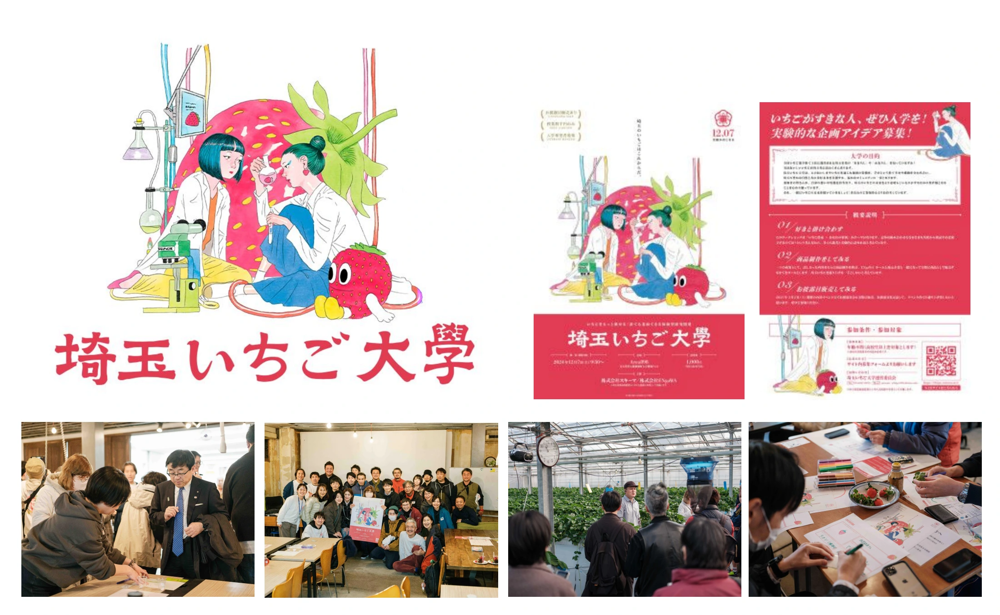

食・農 / 観光 / 埼玉
埼玉いちご大學


PROJECT INFORMATION
公式サイトを見る ↗（新しいタブで開く）埼玉県の中山間地域活性化に関する「埼玉いちご大學」。いちごを軸に、地域と食・農をつなぐ取り組みです。
01 / 背景とテーマ
輪郭を与える
埼玉県のいちご「あまりん」は、いちご選手権で金賞を取っています。その事実が、ほとんど知られていません。いちごを入口に中山間地域の魅力を学び直す。そのためにどうするかを考え、わたしたちは「埼玉いちご大學」という架空の大学コミュニティをつくりました。「いちご好き」とともに新商品を開発する場をつくり、いちごに偏らない人材にも声をかけることで、さまざまなプロダクトが生まれる状態を設計しています。
02 / SCHEMAの担当範囲
全体を整える
SCHEMAは企画・設計からデザイン、ワークショップの運営、販促、映像までを担当。県農業ビジネス支援課とともに、生産者と県民が出会う場を組み立てています。Webサイトなどの販促ツールも、必要なものだけを設計して実施する方針です。横瀬町のArea898で開いた初回ワークショップには、飲食業・IT・製造・デザイン・農業・学生など約45人が参加。午前は秩父フルーツファームで栽培や土づくりを学び、午後はチームに分かれて商品アイデアを出し合いました。商品開発は横瀬町の地域商社チャレンジキッチンENGaWAと組み、メインビジュアルはアーティストの我喜屋位瑳務さんにお願いしています。
03 / 取り組みの視点
枠組みをひらく
3年の計画として設計しています。1年目は商品企画。いちご塩をはじめ、さまざまなプロダクトが生まれました。2年目はプロモーション企画。3年目は、それを具体的な商品として成り立たせるところまで持っていく。単年度で終わる事業にせず、コミュニティごと育てていく組み立てです。